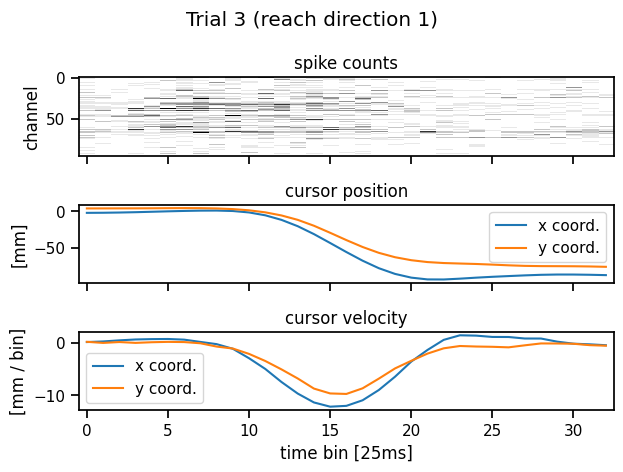
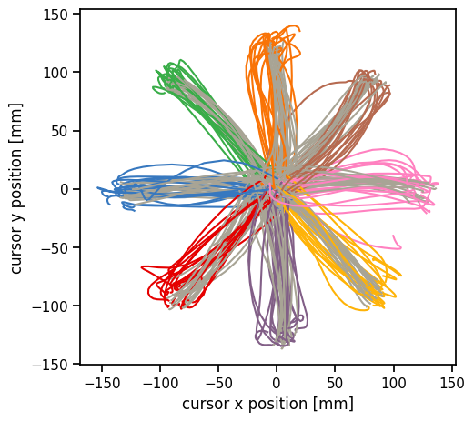

Bayesian Decoding#
The previous lab developed nonlinear encoder models for predicting neural responses to sensory stimuli. This lab develops decoder models for inferring movements from neural spike trains. One way to decode is via Bayesian inference: if we have a strong encoding model and a good prior distribution on movements, we can combine them to infer the posterior distribution of movements given spikes. This allows us to build constraints into the prior; e.g. that movements tend to be smooth. Ultimately, decoding is just another regression problem, and the Bayesian approach offers a convenient way of constructing a conditional distribution of movements given spikes, leveraging prior knowledge about how movements unfold.
We’ll use a dataset from Prof. Krishna Shenoy, a leader in the field of motor neuroscience and brain-computer interfaces who sadly passed away a few years ago. The data consists of a 96-channel Utah array recording from motor cortex of a non-human primate performing a center-out reaching task. The data and a related model are described in (Gilja*, Nuyujukian*, et al, 2012).
References
Gilja, Vikash, Paul Nuyujukian, Cindy A. Chestek, John P. Cunningham, Byron M. Yu, Joline M. Fan, Mark M. Churchland, et al. 2012. “A High-Performance Neural Prosthesis Enabled by Control Algorithm Design.” Nature Neuroscience 15 (12): 1752–57.
Setup#
%%capture
try:
import jaxtyping
except:
!pip install jaxtyping
import matplotlib.pyplot as plt
import seaborn as sns
import torch
import torch.nn as nn
import torch.nn.functional as F
from torch.utils.data import Dataset
from torch.distributions import MultivariateNormal
from dataclasses import dataclass
from jaxtyping import Float, Int
from torch import Tensor
Show code cell content
#@title Helper functions
# Set some plotting defaults
sns.set_context("notebook")
# initialize a color palette for plotting
palette = sns.xkcd_palette(["windows blue",
"red",
"medium green",
"dusty purple",
"greyish",
"orange",
"amber",
"clay",
"pink"])
@dataclass
class Trial:
"""
A simple dataclass to hold the data for a single trial.
Attributes
----------
spikes: Float[Tensor, "num_timebins num_neurons"]
The neural activity of the trial.
position: Float[Tensor, "num_timebins 2"]
The position of the cursor in 2D space.
velocity: Float[Tensor, "num_timebins 2"]
The velocity of the cursor in 2D space.
condition: int
The condition (reach direciton) of the trial.
"""
spikes: Float[Tensor, "num_timebins num_neurons"]
position: Float[Tensor, "num_timebins 2"]
velocity: Float[Tensor, "num_timebins 2"]
condition: int
class ReachDataset(Dataset):
"""A simple dataset object.
Attributes
----------
all_spikes: Float[Tensor, "num_trials num_timebins num_neurons"]
The neural activity from all the trials.
all_positions: Float[Tensor, "num_trials num_timebins 2"]
The position of the cursor in 2D space for all trials.
all_velocities: Float[Tensor, "num_trials num_timebins 2"]
The velocity of the cursor in 2D space for all trials.
all_conditions: Int[Tensor, "num_trials"]
The condition (reach direction) of all trials.
"""
all_spikes: Float[Tensor, "num_trials num_timebins num_neurons"]
all_positions: Float[Tensor, "num_trials num_timebins 2"]
all_velocities: Float[Tensor, "num_trials num_timebins 2"]
all_conditions: Int[Tensor, "num_trials"]
def __init__(self,
spikes: Float[Tensor, "num_trials num_timebins num_neurons"],
position: Float[Tensor, "num_trials num_timebins 2"],
velocity: Float[Tensor, "num_trials num_timebins 2"],
condition: Int[Tensor, "num_trials"]) -> None:
self.all_spikes = spikes
self.all_positions = position
self.all_velocities = velocity
self.all_conditions = condition
assert len(self.all_spikes) == len(self.all_positions)
assert len(self.all_spikes) == len(self.all_velocities)
assert len(self.all_spikes) == len(self.all_conditions)
def __len__(self):
return self.all_spikes.shape[0]
def __getitem__(self, idx: int) -> Trial:
"""
Get a single trial from the dataset.
Parameters
----------
idx: int
The index of the trial to get.
Returns
-------
Trial
A Trial object containing the spikes, position, velocity, and condition
of the trial.
"""
return Trial(spikes=self.all_spikes[idx],
position=self.all_positions[idx],
velocity=self.all_velocities[idx],
condition=self.all_conditions[idx])
def plot_trial(dataset: ReachDataset,
idx: int,
bin_size: int=25):
"""
Plot the spikes, position, and velocity of a single trial.
Parameters
----------
dataset: ReachDataset
The dataset to plot.
idx: int
The index of the trial to plot.
bin_size: int
The size of the time bins in ms.
"""
trial = dataset[idx]
fig, axs = plt.subplots(3, 1, sharex=True)
axs[0].imshow(trial.spikes.T,
interpolation="none",
aspect="auto",
cmap="Greys")
axs[0].set_ylabel("channel")
axs[0].set_title("spike counts")
axs[1].plot(trial.position[:, 0], label='x coord.')
axs[1].plot(trial.position[:, 1], label='y coord.')
axs[1].set_ylabel("[mm]")
axs[1].legend()
axs[1].set_title("cursor position")
axs[2].plot(trial.velocity[:, 0], label='x coord.')
axs[2].plot(trial.velocity[:, 1], label='y coord.')
axs[2].set_xlabel("time bin [{}ms]".format(bin_size))
axs[2].set_ylabel("[mm / bin]")
axs[2].legend()
axs[2].set_title("cursor velocity")
fig.suptitle("Trial {} (reach direction {})".format(idx, trial.condition))
plt.tight_layout()
def plot_reach_trajectories(dataset: ReachDataset) -> None:
"""
Plot the reach trajectories of the cursor for a set of trials.
Parameters
----------
dataset: ReachDataset
The dataset to plot.
"""
for trial in dataset:
plt.plot(trial.position[:, 0],
trial.position[:, 1],
color=palette[trial.condition])
plt.xlabel("cursor x position [mm]")
plt.ylabel("cursor y position [mm]")
plt.gca().set_aspect("equal")
plt.tight_layout()
def plot_decoder(dataset: ReachDataset,
decoder: nn.Module) -> None:
"""
Plot the true and decoded trajectories of the cursor for a set of trials.
Parameters
----------
dataset: ReachDataset
The dataset to plot.
decoder: SimpleDecoder
The decoder to use for plotting.
"""
fig, axs = plt.subplots(1, 2, figsize=(8, 4), sharex=True, sharey=True)
for trial in dataset:
# decode velocity and integrate to get position
dec_velocity = decoder(trial.spikes)[0]
dec_position = trial.position[0] + torch.cumsum(dec_velocity, axis=0)
color = palette[trial.condition]
axs[0].plot(trial.position[:, 0], trial.position[:, 1], color=color)
axs[1].plot(dec_position[:, 0], dec_position[:, 1], color=color)
axs[0].set_title("test movements")
axs[0].set_xlabel("cursor x position")
axs[0].set_ylabel("cursor y position")
axs[1].set_xlabel("cursor x position")
axs[1].set_title("decoded test movements")
plt.tight_layout()
def plot_predictions(dataset: ReachDataset,
idx: int,
decoder: nn.Module) -> None:
"""
Plot the true and decoded trajectories of the cursor for a set of trials.
Parameters
----------
dataset: ReachDataset
The dataset to plot.
idx: int
The index of the trial to plot.
decoder: SimpleDecoder
The decoder to use for plotting.
"""
trial = dataset[idx]
decoder_mean, decoder_covar = decoder(trial.spikes)
if decoder_covar.ndim == 2:
decoder_covar = decoder_covar.unsqueeze(0).repeat(len(trial.velocity), 1, 1)
fig, axs = plt.subplots(2, 1, sharex=True)
axs[0].imshow(trial.spikes.T,
interpolation="none",
aspect="auto",
cmap="Greys")
axs[0].set_ylabel("channel")
axs[0].set_title("spike counts")
h = axs[1].plot(trial.velocity[:, 0], ls='-', lw=2, label='true x vel.')[0]
axs[1].plot(decoder_mean[:, 0], ls=':', color=h.get_color(), label='pred. x vel.')
axs[1].fill_between(range(len(trial.velocity)),
decoder_mean[:, 0] - 2*torch.sqrt(decoder_covar[:, 0, 0]),
decoder_mean[:, 0] + 2*torch.sqrt(decoder_covar[:, 0, 0]),
alpha=0.2, color=h.get_color())
h = axs[1].plot(trial.velocity[:, 1], ls='-', lw=2, label='true y vel.')[0]
axs[1].plot(decoder_mean[:, 1], ls=':', color=h.get_color(), label='pred. y vel.')
axs[1].fill_between(range(len(trial.velocity)),
decoder_mean[:, 1] - 2*torch.sqrt(decoder_covar[:, 1, 1]),
decoder_mean[:, 1] + 2*torch.sqrt(decoder_covar[:, 1, 1]),
alpha=0.2, color=h.get_color())
axs[1].set_xlabel("time bin")
axs[1].set_ylabel("[mm / bin]")
axs[1].legend(ncol=2, loc='upper right', fontsize='small')
axs[1].set_title("cursor velocity")
fig.suptitle("Trial {} (reach direction {})".format(idx, trial.condition))
plt.tight_layout()
Load the data#
We have preprocessed the data into training and test dictionaries. Each dictionary contains the following keys:
spikesa (\(R \times T \times 96\)) array of spike counts for each of the 96 channels where \(R\) is the number of trials and \(T\) is the number of 25ms time bins per trialpositiona (\(R \times T \times 2\)) array of cursor positionsvelocitya (\(R \times T \times 2\)) array of estimated cursor velocitiesconditiona length \(R\) tensor containing integers \(0,\ldots,8\) specifying the reaching condition (i.e. starting point and target)
!wget -nc https://github.com/slinderman/ml4nd/raw/refs/heads/main/data/05_decoding/lab5_data.pt
Package the data into datasets#
Package the data dictionaries into ReachDataset objects defined above for easier access and iteration.
# Load the data and create datasets
_train_data, _test_data = torch.load('lab5_data.pt')
train_dataset = ReachDataset(**_train_data)
test_dataset = ReachDataset(**_test_data)
# Delete the dictionaries so that we don't accidentally reference them
del _train_data, _test_data
# Set some global constants
NUM_TRIALS = len(train_dataset)
NUM_TIMEBINS = train_dataset.all_spikes.shape[1]
NUM_NEURONS = train_dataset.all_spikes.shape[2]
Plot the spike counts and position/velocity times for a single trial#
Let’s look at one trial. It consists of a time series of spike counts from each channel of the Utah array, as well as a position time series. We also plot the velocity, which is just a first-order estimate of the derivative of the position.
plot_trial(train_dataset, 3)

Plot the cursor positions across all trials#
Plot the reach directions color-coded by the condition type. Most conditions start at the center and move outward to a target. One condition type (gray) starts at the perimeter and moves to the center.
plot_reach_trajectories(train_dataset)

Part 1: Implement a simple Bayesian decoder#
Our first model is a simple Bayesian decoder to infer the velocity given the spike counts. We will make two main assumptions:
We assume neural activity at time \(t\) depends on the velocity at time \(t\) alone.
We assume a linear Gaussian model to relate velocity to spike counts.
Neither assumption is warranted in practice, and we will improve our model in subsequent sections.
Let \(\mathbf{x}_{i,t} \in \mathbb{R}^2\) denote the cursor velocity at time \(t\) on trial \(i\). Likewise, let \(\mathbf{y}_{i,t} \in \mathbb{R}^{96}\) denote the spike count measured on the 96-channel array at time \(t\) on trial \(i\). Our model is,
with parameters,
\(\mathbf{m} \in \mathbb{R}^{2}\): the prior mean of the velocity
\(\mathbf{Q} \in \mathbb{R}^{2 \times 2}\): the prior covariance of the velocity
\(\mathbf{C} \in \mathbb{R}^{96 \times 2}\): the emission matrix
\(\mathbf{d} \in \mathbb{R}^{96}\): the emission bias
\(\mathbf{R} \in \mathbb{R}^{96 \times 96}\): the emission covariance Note that \(\mathbf{Q}\) and \(\mathbf{R}\) are positive definite matrices.
As we derived in the notes, the posterior distribution of the velocity given the spike counts is,
where \((\boldsymbol{\mu}_{i,t}, \boldsymbol{\Sigma}_{i,t})\) are the posterior mean and covariance, respectively, and \((\mathbf{J}_{i,t}, \mathbf{h}_{i,t})\) are the natural (aka information-form) parameters.
In Part 1, you’ll estimate the parameters of this model, \(\{\mathbf{Q}, \mathbf{C}, \mathbf{d}, \mathbf{R}\}\) and implement the simple decoder as a PyTorch module.
Problem 1a: Estimate the prior mean and covariance#
Compute the empirical mean and covariance of the velocities,
def estimate_basic_prior_prms(
dataset: ReachDataset
) -> tuple[Float[Tensor, "2"], Float[Tensor, "2 2"]]:
"""
Compute the covariance of the velocity over all
trials and time steps.
Parameters
----------
dataset: ReachDataset
The dataset to compute the covariance from.
Returns
-------
m_hat: Float[Tensor, "2"]
The mean of the velocity over all trials and time steps.
Q_hat: Float[Tensor, "2 2"]
The covariance of the velocity over all trials and time steps.
"""
###
# YOUR CODE BELOW
m_hat = ...
Q_hat = ...
###
return m_hat, Q_hat
Problem 1b: Estimate the encoding model parameters#
Estimate \(\mathbf{C} \in \mathbb{R}^{96 \times 2}\), \(\mathbf{d} \in \mathbb{R}^{96}\), and \(\mathbf{R} \in \mathbb{R}^{96 \times 96}\) by fitting a linear regression to the training velocity and spikes.
Let \(\mathbf{X} \in \mathbb{R}^{RT \times 3}\) denote the matrix of concatenated velocities across all trials with an additional column of ones for the intercept. Let \(\mathbf{Y} \in \mathbb{R}^{RT \times 96}\) denote a matrix of spike counts concatenated across all trials.
The ordinary least squares estimate of the regression weights is,
where \(\hat{\mathbf{W}} = [\hat{\mathbf{C}}, \hat{\mathbf{d}}] \in \mathbb{R}^{96 \times 3}\) are the desired parameters.
For the covariance matrix, use the empirical covariance of the residuals, \(\hat{\mathbf{R}} = \mathrm{Cov}(\boldsymbol{\delta}_{i,t})\), where \(\boldsymbol{\delta}_{i,t} = \mathbf{y}_{i,t} - \hat{\mathbf{C}} \mathbf{x}_{i,t} - \hat{\mathbf{d}}\).
def estimate_emission_prms(
dataset: ReachDataset
) -> tuple[Float[Tensor, "num_neurons 2"],
Float[Tensor, "num_neurons"],
Float[Tensor, "num_neurons num_neurons"]]:
"""
Compute the parameters of the simple encoding model.
Parameters
----------
dataset: ReachDataset
The dataset to compute the parameters from.
Returns
-------
C_hat: Float[Tensor, "num_neurons 2"]
The encoding emission matrix.
d_hat: Float[Tensor, "num_neurons"]
The encoding emission bias.
R_hat: Float[Tensor, "num_neurons num_neurons"]
The covariance of encoding model.
"""
###
# YOUR CODE HERE
C_hat = ...
d_hat = ...
R_hat = ...
###
return C_hat, d_hat, R_hat
Problem 1c: Implement the simple decoder model#
Implement the simple decoder as a PyTorch Module. We won’t be fitting any parameters (you just estimated them above!).
Specifically, complete the forward function to compute mu, and Sigma, and the log_prob function to compute the log probability of a trial’s velocity given the corresponding spikes.
class SimpleDecoder(nn.Module):
"""
A simple decoder that estimates the posterior mean and covariance of the
velocity given the spikes, assuming a Gaussian prior and a linear Gaussian
encoder model.
Attributes
----------
m: Float[Tensor, "2"]
The mean of the prior distribution.
Q: Float[Tensor, "2 2"]
The covariance of the prior distribution.
C: Float[Tensor, "num_neurons 2"]
The encoding emission matrix.
d: Float[Tensor, "num_neurons"]
The encoding emission bias.
R: Float[Tensor, "num_neurons num_neurons"]
The covariance of the encoding model.
"""
m: Float[Tensor, "2"]
Q: Float[Tensor, "2 2"]
C: Float[Tensor, "num_neurons 2"]
d: Float[Tensor, "num_neurons"]
R: Float[Tensor, "num_neurons num_neurons"]
def __init__(self,
m: Float[Tensor, "2"],
Q: Float[Tensor, "2 2"],
C: Float[Tensor, "num_neurons 2"],
d: Float[Tensor, "num_neurons"],
R: Float[Tensor, "num_neurons num_neurons"]
) -> None:
super(SimpleDecoder, self).__init__()
# Store the parameters
self.m = m
self.Q = Q
self.C = C
self.d = d
self.R = R
def forward(self,
spikes: Float[Tensor, "num_timebins num_neurons"]
) -> tuple[Float[Tensor, "num_timebins 2"],
Float[Tensor, "2 2"]]:
"""
Compute the posterior mean and covariance of the velocity given the spikes
for a single trial.
Parameters
----------
spikes: Float[Tensor, "num_timebins num_neurons"]
The neural activity of the trial.
Returns
-------
mu: Float[Tensor, "num_timebins 2"]
The posterior mean of the velocity.
Sigma: Float[Tensor, "2 2"]
The posterior covariance of the velocity (it is the same for all time bins).
"""
# Get the model parameters so we don't always have to reference self
m, Q, C, d, R = self.m, self.Q, self.C, self.d, self.R
###
# YOUR CODE BELOW
#
mu = ...
Sigma = ...
##
# Return the mean and covariance
return mu, Sigma
def log_prob(self,
spikes: Float[Tensor, "num_timebins num_neurons"],
velocity: Float[Tensor, "num_timebins 2"]
) -> float:
"""
Compute the log probability of the velocity given the spikes
for a single trial, using this simple model.
Hint: use the `forward` method to compute the posterior mean and covariance
and plug that into the log probability written above.
Parameters
----------
spikes: Float[Tensor, "num_timebins num_neurons"]
The neural activity of the trial.
velocity: Float[Tensor, "num_timebins 2"]
The true velocity of the cursor in 2D space.
Returns
-------
log_prob: float
The log probability of the velocity given the spikes,
\sum_t \log p(x_{i,t} | y_{i,t}),
as described above.
"""
##
# YOUR CODE BELOW
lp = ...
##
return lp
Instantiate the model#
That’s it! No fitting required. You already estimated the parametes in Problems 1a and 1b.
m_hat, Q_hat = estimate_basic_prior_prms(train_dataset)
C_hat, d_hat, R_hat = estimate_emission_prms(train_dataset)
simple_decoder = SimpleDecoder(m_hat, Q_hat, C_hat, d_hat, R_hat)
Plot the decoded positions#
Now we’ll decode the velocities from the test set and integrate them to get positions that we can compare to the true cursor trajectories.
# Plot the decoded trajectories
plot_decoder(test_dataset, simple_decoder)
# Plot the decoded trajectory for a single trial
plot_predictions(test_dataset, 3, simple_decoder)
Part 3: Model Comparison#
Compare your models in terms of two quantities:
The mean squared error of the decoded velocities (using the posterior mean as your prediction).
The log probabilities of the velocity traces under your model.
In both cases, compare your model to the static decoder provided below, which always outputs the same distribution regardless of the spikes.
class StaticDecoder(nn.Module):
"""
A static decoder that always outputs the mean and covariance
of the prior distribution, regardless of the spikes.
"""
m: Float[Tensor, "2"]
Q: Float[Tensor, "2 2"]
def __init__(self, m, Q):
self.m = m
self.Q = Q
super().__init__()
def forward(self, spikes):
T = spikes.shape[0]
return self.m.repeat(T, 1), self.Q
def log_prob(self, spikes, velocity):
return MultivariateNormal(self.m, self.Q).log_prob(velocity).sum()
baseline_decoder = StaticDecoder(
train_dataset.all_velocities.reshape(-1, 2).mean(axis=0),
train_dataset.all_velocities.reshape(-1, 2).T.cov(correction=0)
)
Problem 3a: Compare the mean squared errors of your models#
Make a bar plot of the mean squared error of your models’ predictions on test data vs the static baseline provided above. You should have three bars:
The static decoder
The simple decoder from Part 1
The correlated decoder from Part 2
##
# YOUR CODE HERE
##
Problem 3b: Compare the log probability of your models#
Make a bar plot of the change in log probability under your models over the static decoder baseline, averaged over the test data. You should have two bars.
The average log probability under simple decoder minus the average log probability under the static baseline
The average log probability under correlated decoder minus the average log probability under the static baseline
##
# YOUR CODE HERE
##
Part 4: Discussion#
Problem 4a#
Why do you think we decoded velocity instead of position? What are the limitations of decoding velocity and then integrating it to obtain position estimates?
Your answer here
Problem 4b#
Decoding performance could be limited by either the amount of information about movement contained in the neural activity, or by the particular form of decoder that we employed. What do you think the limiting factor is in this lab? Why?
Your answer here
Problem 4c#
Our encoder only used the velocity at time \(t\) to predict the spike counts at time \(t\). Write the log likelihood (but do not implement or fit) a model that uses a window of velocities to predict the spike counts. Describe (but do not fully derive) how you would compute the posterior distribution over velocities given spikes under this model. What challenges would your model present?
Your answer here
Problem 4d#
Suppose we wanted to use the decoder to control a prosthetic limb and we needed it to work for months or years at a time. Would you expect the same decoder parameters to work throughout that time course, and if not, how might you adapt the decoder over time to maintain or potentially even improve performance?
Your answer here
Submission Instructions#
Download your notebook in .ipynb format and use the following command to convert it to PDF
jupyter nbconvert --to pdf lab5_name.ipynb
If you’re using Anaconda for package management, you can install nbconvert with
conda install -c anaconda nbconvert
Upload your .pdf file to Gradescope.
Only one submission per team!